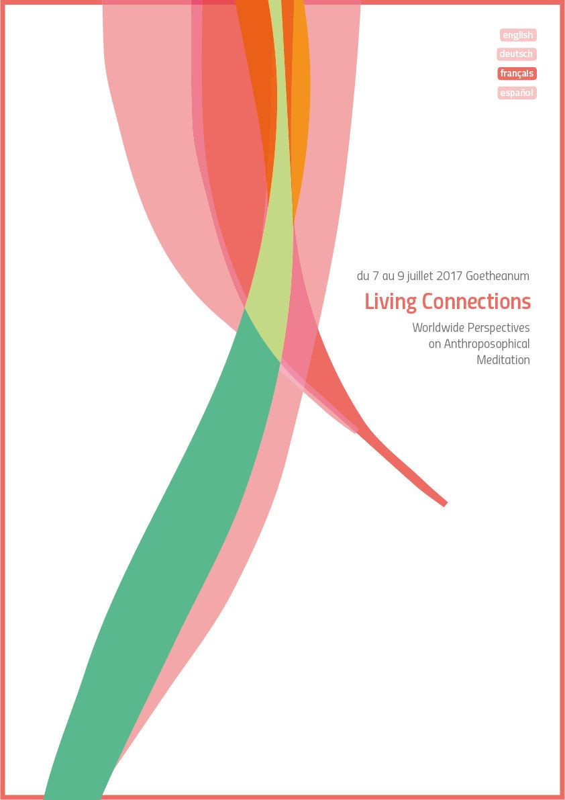

Worldwide Perspectives on Anthroposophical Meditation
Die erste öffentliche Tagung am Goetheanum, die ganz der Meditation gewidmet war.

Welcome to the first public event fully devoted to the topic of meditation at the Goetheanum!
This event is an introduction to anthroposophical meditation. It is intended for everyone interested in taking a deeper look into the foundations of meditation and its methods, as a living practice and form of experience. Contributors from many different parts of the world are coming to share from their own practice out of the fields of science, art, many vocations and daily life. The event focusses on sharing and developing experiences, offering insight into what anthroposophical meditation already is – and what it might become.
The title ‹Living Connections› refers, on the one hand, to the relationship each and every one of us carries to ourself, an inner dialogue connecting us to something higher, beyond the limitations of our physical boundaries. On the other hand, it refers to the connections with everything we meet outside of us: people, nature and other beings in the world. The intention for this event is to open intimate and exploratory spaces through encounters and conversations, in which living connections may emerge as a possible support for a fragile, unknowable future.
Everyone is welcome, regardless of background knowledge and experience. We encourage coworkers in anthroposophical institutions as well as in non-anthroposophical contexts, students, unemployed, parents and the retired, people of all ages from the north, south, east and west to take part in this exploration, to be part of the living connections for which the Goetheanum will provide a supportive environment in July!
The background of this event is the ‹Goetheanum Meditation Worldwide Initiative›. This network started 10 years ago with a small group of people – today it encompasses several hundred people worldwide. Its motivation is to bring anthroposophical meditation into conversation; to research, improve and make visible the inspirations of anthroposophical meditation in today’s world.
Willkommen zur ersten öffentlichen Veranstaltung am Goetheanum, die sich ganz dem Thema Meditation widmet!
Diese Konferenz ist eine Einführung in anthroposophische Meditation. Sie ist für alle, die einen tieferen Einblick in die Grundlagen und Methoden gewinnen wollen. Mitwirkende aus der ganzen Welt kommen, um Erfahrungen aus ihrer Praxis in Wissenschaft, Kunst, im beruflichen und alltäglichen Leben zu teilen. Es wird einen Einblick in die heutige Praxis anthroposophischer Meditation geben – so wie sie ist, und was sie durch neue Verbindungen werden kann.
Der Titel ‹Living Connections› – lebendige Verbindungen – bezieht sich einerseits auf die Verbindung mit uns selbst, einem inneren Dialog, der uns mit einem Höheren verbinden kann. Und andererseits bezieht er sich auf meine Beziehung zu einem Gegenüber: zu Menschen, zur Natur und zu den Wesen in der Welt. Es ist das Ziel dieser Tage, intime, erkundende Räume durch Begegnungen und Gespräche zu eröffnen, in denen lebendige Verbindungen entstehen und entdeckt werden können – als unterstützende Impulse für eine offene Zukunft.
Jeder ist willkommen, unabhängig vom eigenen Hintergrund, Vorwissen und Erfahrungshorizont. Mitarbeiter aus anthroposophischen Institutionen sowie aus allen beruflichen Kontexten, Studierende, Arbeitslose, Eltern und Rentner aus Nord, Süd, Ost und West sind herzlich eingeladen, an dieser Erkundung teilzunehmen!
Diese Veranstaltung ist Teil der ‹Goetheanum Meditation Worldwide Initiative›. Dieses Netzwerk begann vor 10 Jahren mit einer kleinen Gruppe, heute umfasst es mehrere hundert Menschen weltweit. Ihre Motivation ist, die anthroposophische Meditation zu erforschen, zu entwickeln und sichtbarer in der heutigen Welt zu machen.
Dokumente
Public Conference, 7–9 July 2017
July 7–9 2017 Goetheanum
The language for all plenum sessions are English, with translations into German, French and Spanish. The workgroups in 3 parts, that participants will follow throughout the conference, will each be held in one of the four different languages.
Friday, July 7
8.00
Check-in at the reception in the Goetheanum
throughout the whole morning. Registration
for workgroups and guided tours.
15.00
Welcome and Opening
Great Hall
15.45
World Café
meeting each other in conversation
At the terrace
16.30
Workgroups 1
18.30
Dinner Break
20.00
Intersections
Poetry and Meditation
Bodo von Plato
Eurythmy: Maren Stott/Violin: Malcolm Allison
Great Hall
21.30
Night café
Saturday, July 8
9.00
Panels
Meditation and Science Today
Terje Sparby, Jana Loose, Fergus Anderson, Arthur Zajonc (text contribution)
Moderation: Nathaniel Williams
Great Hall
10.15
Coffee Break
11.00
Workgroups 2
13.00
Lunch Break
15.00
Open Space
for questions and initiatives
from the participants
18.00
Dinner Break
20.00
Intersections
Music and Meditation
A commission composition by
Don Jamison for string trio
and vocal quartet
Great Hall
21.30 Night café
Sunday, July 9
9.00
Panels
Meditation and Society Today
Tho Ha Vinh, Joan Sleigh, Friedrich Glasl
Moderation: Marjatta van Boeschoten
Great Hall
10.15
Tea Break
11.00
Workgroups 3
12.45
Closing
13.30
End
Pre-Conference, 5–7 July 2017
July 5–7 2017 Goetheanum
The 19 Class Lessons – a path of Meditation
This Pre-Conference is for Members of the ‹School of Spiritual Science› and focuses on the meditative path formed by the 19 ‹Class Lessons›. These lessons were given by Rudolf Steiner in 1924 to open a contemporary path of spiritual deepening leading to a living connection and dialogic participation with todays world and its deeper spiritual dimension. With its different elements this conference provides an exemplary deepening and an orientation of the whole path of these 19 meditations.
The languages of the Pre-Conference are English and German, and there will be a consecutive translation from the one into the other.
Wednesday, July 5
Check-in and registration at the Goetheanum throughout the day.
Venue for the Conference: Schreinerei
19.00 Reception and Opening
Plenum 1 ‹School of Spiritual Science›*:
Questions and Intentions of the Participants
*short break*
20.30–21.30 Contemplating the 1st to 7th Class Lesson, introduced through Contemporary Music**
21.30 Night Café
Thursday, July 6
9.00 Contemplating the 7th to 11th Class Lesson, introduced through Contemporary Music
10.15 Coffee break
11.00 Round table conversations 1***
Practices, Exercises and Conversations on the Meditations in the 19 Class Lessons
13.00 Dinner break
16.00 Round table conversations 2
18.00 Break and small evening meal
19.00 Plenum 2 ‹School of Spiritual Science›: Exchange of Best Practice
20.00 Contemplating the 12th to 16th Class Lesson, introduced through Contemporary Music
Friday, July 7
9.00 Contemplating the 17th to 19th Class Lesson, introduced through Contemporary Music
10.15 Coffee break
11.00 Round table conversations 3
12.00 Plenum 3
‹School of Spiritual Science›:
Intentions for the Future
13.00 Dinner break and breathing out before the Public Conference starts.
* Moderation Plenum: Robin Schmidt
** Contemplations on the mantras English/German: Ursula Flatters, Ron Dunselman, Wolfgang Kilthau and Bodo von Plato
Music introduction and piano: Matthias Bölts
*** The Round table conversations (exercises and conversations) will take place in different languages and will be hosted by the following persons (there will also be open groups without hosts):
1. Ron Dunselman, Milou Dunselman (NL)
2. Matthias Bölts, Wolfgang Kilthau, Robin Schmidt (GE)
3. Joan Sleigh, Silke Sponheuer, Ursula Zimmermann (EN)
4. Bodo von Plato, Aina Aasland (GE)
5. Paul Mackay, Marjatta van Boeschoten (GE)
6. Doris Dodrimont, Alain Tessier (FR)
7. Dorian Schmidt, Martin Hollerbach (GE)
8. Simon Reakes, Terje Sparby, Johannes Nilo (EN)
9. Ursula Flatters & N.N. (GE/EN)